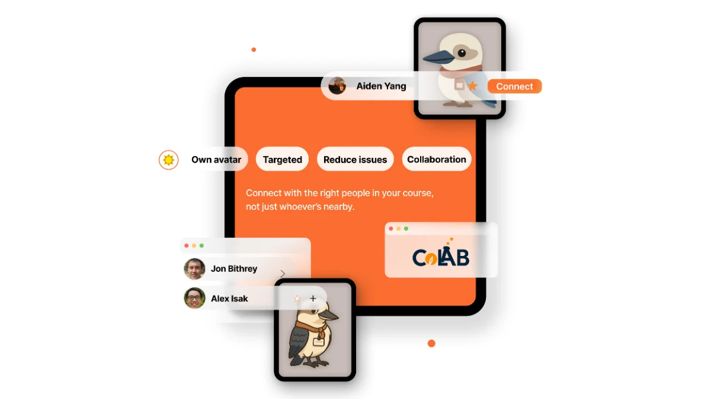

0 connected
CoLab
A hybrid learning platform for international design students. I led the team through research, prototyping, brand design and the website.

The student experience
Find a teammate, browse a lecture or take a short quiz.
Grid Systems in Interaction Design
— Why grids?
00:00 / 12:45
Question
1 / 3
What is the primary purpose of a grid system in interaction design?
Typography Composition Workshop
Dr. Hannah Lee · Visual Communication
Today: kerning, baseline grid, negative space, and hierarchy.
Hover any underlined term for an inline explanation.
Core Design Principles
- Proper letter spacing enhances readability.
- Baseline grids create vertical rhythm.
- White space is an active design element.
- Hierarchy directs attention effectively.
Learning together
CoLab is a hybrid learning platform for international design students, exhibited at the University of Sydney's graduation exhibition and used by the university as a reference. It pairs standardized online lectures and quizzes with an in-person tutorial space — letting students freely form skill-based teams, follow lectures at their own pace, and ask questions in real time through an embedded AI assistant and live chat.
Designing the classroom
Free Team-Up
Skill-based profiles let students find compatible teammates in the same course — no more random groups.
Standardized Online Lectures
Lecture content is delivered online with quiz-verified attendance — students can pace themselves, replay sections, and reduce language load.
Quiz-verified Attendance
Lecture quizzes confirm participation while giving students immediate feedback on what they understood.
In-class Tutorial Whiteboard
During tutorials, every student sees richer content on their own screen, hovers terms for AI explanations, and joins a live chat — without interrupting the class.
Project details
- Role
- Team lead, UI/UX and frontend
- Year
- 2025
- Type
- Hybrid Learning
- Tools
- Figma · Web